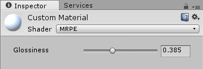

MaterialEditor.RangeProperty
Parameters
| label | Label for the property. | |
| prop | The property to edit. | |
| position | Position and size of the range slider control. |
Description 描述
Draw a range slider for a range shader property.
To create a custom material editor, first you need to create the custom editor class and save it in the Assets/Editor folder, then reference the class name in your shader. For example:
CustomEditor "MaterialRangePropertyExample"
Here is an example showing a Range slider, affecting the shader's Glossiness property:
using UnityEngine; using UnityEditor;
public class MaterialRangePropertyExample : MaterialEditor { public override void OnInspectorGUI( ) { serializedObject.Update( ); SerializedProperty matShader = serializedObject.FindProperty( "m_Shader" );
if( !isVisible ) return;
Material mat = target as Material; MaterialProperty Glossiness = GetMaterialProperty( new Object[] { mat }, "_Glossiness" );
if( Glossiness == null ) return;
EditorGUI.BeginChangeCheck( );
RangeProperty( Glossiness, "Glossiness" );
if( EditorGUI.EndChangeCheck( ) ) PropertiesChanged( ); } }
Here is a similar example, using the Rect parameter to position and size the slider control within the custom material editor pane:
using UnityEngine; using UnityEditor;
public class MaterialRangePropertyWithRectExample : MaterialEditor { public override void OnInspectorGUI( ) { serializedObject.Update( ); SerializedProperty matShader = serializedObject.FindProperty( "m_Shader" );
if( !isVisible ) return;
Material mat = target as Material; MaterialProperty Glossiness = GetMaterialProperty( new Object[] { mat }, "_Glossiness" );
if( Glossiness == null ) return;
EditorGUI.BeginChangeCheck( );
RangeProperty( new Rect( 20, 60, 300, 20 ), Glossiness, "Glossiness" );
if( EditorGUI.EndChangeCheck( ) ) PropertiesChanged( ); } }
This is what the example editor pane looks like:

Example material editor in Inspector.